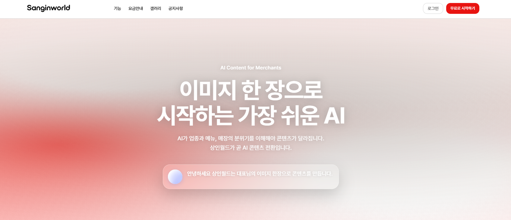

소상공인 디지털 상생 플랫폼
사진 한 장이 콘텐츠가 되고
상생의 길을 엽니다
(주) 태경씨앤코
www.tkcnco.com · info@tkcnco.com · 051-208-3346 · 부산광역시 강서구 명지오션시티1로 173INDEX
01상인월드를 소개합니다
02소상공인의 현실 — 데이터와 뉴스
03정부가 연 시장, 우리는 실행 도구
04솔루션과 시장
05로드맵과 사업
What is 상인월드 · AI Content for Merchants
도구가 아니라,
디지털 신뢰 자산
상인월드는 소상공인·자영업자를 위한 디지털 상생 플랫폼입니다. 사장님이 가장 먼저 만나고, 가장 자주 쓰게 될 도구를 지향합니다. 거래 인프라보다 먼저, 사장님 한 분 한 분의 '디지털 정체성'과 '신뢰 자산'을 쌓는 단계입니다.
한 줄 정의
사진 한 장 → 다양한 콘텐츠를 쉽게 생산!
비전 · "우리가 서로에게 좋은 소비자가 되자"
sanginworld.com

콘텐츠
신뢰
거래
성장
처음부터 이 순서로 설계했습니다.
The Reality
폐업은 사상 최대,
원인은 자금만이 아니다
2024년 폐업 사업자 — 통계 집계 이후 첫 100만 돌파
100만 8,282명
연간 폐업 사업자 추이
폐업 사유 1위는 '사업부진'(50%+) —
자금이 아니라 손님을 부를 마케팅 역량의 문제입니다.
출처 : 국세청 국세통계 · 세계일보 2025.07 (2024년 폐업 100만8,282명) ·
segye.com데이터가 아니라, 지금의 뉴스입니다
폐업 급증부터 역대 최대 예산·AI 지원 신설까지 — 지금 이 순간 언론과 정부가 말하는 소상공인 이야기를 모았습니다.
"2024년 폐업 자영업자 100만 명 넘어…사상 최초"
"2026년 소상공인 예산 역대 최대 5.4조 편성"
"정부가 소상공인에게 AI를 준다 — 혁신 AI 활용지원 신설"
"디지털·스마트기술 활용 27.2%…전년비 9.2%p↑"
문제는 실력이 아니라, 수단의 격차
대기업은 전담팀으로 매일 콘텐츠를 쏟아내지만 사장님은 혼자입니다. 뒤처지는 건 실력이 아니라 콘텐츠를 만들 수단이 없기 때문입니다.
대기업 · 프랜차이즈
전담 마케팅팀과 예산으로
매일 콘텐츠를 쏟아냅니다.
개인 사장님
매일 '뭘 올릴지' 고민부터
기획·촬영·편집·응대까지 전부 혼자.
SO
좋은 가게지만, 온라인에서 보여지기까지
많은 힘이 듭니다
직접은 버겁고, 대행은 비싸다
직접 하자니 시간과 전문성이 없고, 맡기자니 매달 나가는 비용이 부담입니다 — 두 길 모두 막혀 있습니다.
직접 운영
기획·촬영·편집·업로드·응대까지 전부 혼자. 시간도, 전문성도, 꾸준함도 버겁습니다.
대행 맡김
월 35만~100만원
SNS 대행 평균 비용 + 광고비 별도(15~20%). 매달 나가는 고정비.
고정비 부담이 가장 큰 벽 — 그래서 '한 번 익히면 사장님이 직접' 만드는 도구가 필요합니다.
Chapter 3.
정부가 연 시장,
우리는 실행 도구
개인의 노력만으로도, 정부 지원만으로도 넘기 힘든 벽 — 그래서 우리가 나섰습니다.
정책은 이미 수요를 공식화했다
정부는 역대 최대 예산과 AI·SNS 지원사업으로 소상공인의 콘텐츠·디지털 전환 수요를 이미 공식적으로 뒷받침하고 있습니다.
5.4조
2026 소상공인 예산 역대 최대
직접지원 1조3,410억 + 정책자금 3조3,620억 (7분야 26사업)
최대 4,000만원
혁신 소상공인 AI 활용지원 (신설)
AI 모델→사업화→AI 마케팅 전주기 · 전국 17개 시도
750개사
SNS 활용 지원 패키지
제품 진단 · SNS 타겟광고 · 컨설팅
The Gap
정책은 밀지만,
실행은 공백
소상공인 디지털·스마트기술 활용률
27.2% ▲9.2%p
= 전체 소상공인 10곳 중 약 3곳만 실제로 씁니다
빠르게 늘지만
10곳 중 약 7곳(72.8%)은
여전히 디지털 도구를 못 쓰고 있습니다.
못 쓴 건 실력이 아니라
돈·사람·지식의 벽 때문입니다.
자금 2.2인력 2.4지식 2.5준비수준 3항목 모두 최하위권
그 수요는 온라인 노출에 쏠린다
활용 유형별 비율 (활용 사업체 중 · 중복응답)
막았던 3대 벽이, 무너졌습니다
못 쓴 건 실력이 아니라 돈·사람·지식의 벽 때문 — 그 셋을 AI가 한꺼번에 낮췄습니다.
구분
지금까지 — 소상공인의 벽
AI 이후
전문 촬영·편집에 수백만 원
자금 준비도 최하위 · 2.2점
촬영·편집 전문 인력이 필요
인력 준비도 부족 · 2.4점
편집·마케팅 방법을 모름
활용자도 83%가 기초·입문
세 벽이 한꺼번에 낮아진 건, 지금이 처음입니다.
자료 : 소상공인 디지털전환 실태조사 (KOSI·중기부)
왜 지금이어야 하는가
벽이 사라진 지금, 시장은 이미 그쪽으로 움직입니다 — 수요도, 광고도 콘텐츠로.
78.9%
숏폼 콘텐츠 이용률
이미 소비의 중심 — 안 하면 안 보입니다.
200만원→6만원
AI가 무너뜨린 영상 제작비
3주 걸리던 숏폼이 3시간으로. 소상공인 눈높이까지 하락.
90%
광고주의 생성 AI 활용 전망
대기업이 이미 옮겨간 흐름, 사장님도 올라탈 때.
커진 문제＋AI 발전＋정부의 AI 정책지금이 적기
So, 상인월드
실력이 아니라 수단의 문제라면,
그 수단을 채워주면 됩니다.
사장님이 촬영·편집 지식 없이 사진 한 장으로 콘텐츠를 만드는 도구 —
상인월드가 바로 그 '도구의 격차'를 메웁니다.
Chapter 4.
무엇을, 어떻게
— 솔루션과 시장
광고비가 아니라, '도구' 시장
대행 광고비 시장이 아니라,
이미 쓰는 채널을 직접 운영하도록
돕는 도구 시장을 공략합니다.
가장 수요가 크고 진입장벽이 낮은 콘텐츠부터
시작해 파이프라인을 확장합니다.
산출 : 소상공인 613만(
중기부 2024) × 콘텐츠 지출 추정 → TAM
디지털 활용 27.2%·온라인 49% 기반 SNS 운영 수요 → SAM · 초기 침투율 → SOM
※ 1인당 지출·침투율은 추정치
AI 도구는 많지만, 끝까지 가는 사람은 드물다
조작이 어렵고 알아야 할 게 많아 — 도구 선택·프롬프트·편집, 단계마다 벽에 막혀 대부분 초입에서 멈춥니다.
↓ 72.8%는 도구에 진입조차 못 함 — 실제 활용 27.2%뿐
↓ 도입해도 83%가 '기초·입문'에 정체
상인월드엔 포기할 단계가
없습니다
도구 선택·프롬프트·편집 학습이 전부 사라졌습니다.
사진 한 장을 올리면 완성 — 도입이 곧 활용입니다.
배울 게 없으니 중간에 이탈할 단계도 없습니다.
활용률·정체 비율 : 2024 소상공인실태조사(중기부)
막상 다뤄보면, 벽이 계속 나온다
AI 도구는 넘쳐도 — 비용·사람·숙련의 문턱에서 소상공인 대부분이 멈춥니다.
44.2%
비용이 1순위
AI 도입을 막는 가장 큰 이유 — 초기 비용 부담
20.5%
다룰 사람이 없다
전문인력·기획 역량 부족으로 시작조차 못 함
83%
써도 초보에 머문다
활용해도 대부분 '기초·입문' 단계에서 정체
상인월드는 이 세 벽을 한 번에 지웁니다 — 사진 한 장이 유일한 입력, 프롬프트도 편집도 없습니다.
출처 : 중기중앙회 DX·AX 조사 · 2024 소상공인실태조사(중기부)
사진 한 장 → 네 가지 콘텐츠
막막한 주제·문구까지 AI가 제안 — 사진 한 장과 한 줄이 홍보 영상·영상 명함·카드뉴스·블로그 네 갈래 콘텐츠로 확장됩니다.
핵심AI SNS 홍보 영상
사진+한 줄 → 8~10초 광고 영상. 프롬프트 제안·재생성·워터마크 없는 다운로드.
ExtendAI 영상 명함
움직이는 디지털 명함. 링크·QR 하나로 즉시 공유.
ExtendAI 카드뉴스
인스타 캐러셀형 정보 콘텐츠. 신메뉴·이벤트·공지에 최적.
ExtendAI 블로그
네이버·구글 검색에 걸리는 정보 글. 가게를 오래 노출합니다.
네 콘텐츠 모두 사진 한 장 + 한 줄 설명, 같은 입력 하나에서 시작합니다.
실제로 이렇게 만듭니다
사진을 올리면 AI가 주제를 추천하고, 고르면 완성 — 촬영·편집 지식이 필요 없습니다.
상인월드
사진을 올려주세요
JPG · PNG · WEBP
16:99:16
AI 추천 주제
신메뉴 소개 릴스
가게 분위기 홍보
할인 이벤트 ✓
영상 생성
업로드 → AI 주제 추천 → 생성 → 다운로드. 워터마크 없이, 가로·세로 모두. (제품 UI 목업)
네 단계면 완성됩니다
가입부터 이미지 업로드, AI 생성, 보관까지 — 촬영·편집 지식이 없어도 네 단계면 콘텐츠가 완성됩니다.
AI 생성
프롬프트 제안 →
선택·재생성 → 생성
사장님에게 무엇이 달라지나
전문가·대행사 없이도, 시간·비용·고민의 벽이 사라집니다.
SNS 대행은 건당 평균 30만 원대. 상인월드는 그 비용과 시간을 사장님 손끝으로 되돌려줍니다.
Chapter 5.
이 도구는 끝이 아니라
입구입니다
콘텐츠에서 거래·생태계까지
쇼츠 자동화에서 출발해 공식 페이지와 간단 거래, 지역 생태계, 오프라인·수출까지 단계적으로 확장합니다.
Phase 0 · 현재
쇼츠 자동화
소상공인 유입 + 수익모델 검증
Phase 1
공식 페이지·간단 거래
라이브페이지·영상 명함, 리뷰, 간단 쇼핑
Phase 2
지역 생태계·라이브커머스
길드·모임, 매칭, 풀 쇼핑몰
Phase 3
오프라인 단말·수출
POS 연동, 에스크로, 수출 결제
3축 · 콘텐츠·스토리 / 거래·운영 / 성장 지원 으로 확장
Local Execution
지역에서 먼저,
밀착 실행
정책과 현장을 잇는 실행 파트너가 되겠습니다.
부산에 뿌리를 둔 팀
지역 소상공인과 가장 가까운 자리
지역 우선 시범 지원
부산 소상공인을 먼저 지원 대상으로 검토
성과지표 공동 설계
지자체와 상권 활성화 성과 함께 설계
안심하고 쓰세요
만든 콘텐츠는 온전히 사장님의 것 — 권리도, 데이터도, 운영 주체도 분명합니다.
내 콘텐츠, 내 권리
생성물은 사장님 소유. 워터마크 없이 상업적으로 자유롭게 사용합니다.
안전한 데이터
업로드한 사진·정보는 콘텐츠 생성에만 쓰이고 안전하게 관리됩니다.
분명한 운영 주체
TP Factory — 태경씨앤코(기획·운영)×유시스(개발·인프라). 상표 출원 진행.
소상공인의 내일을
바꿔나갑니다
콘텐츠로 신뢰를 쌓고, 신뢰로 거래를 만들고, 거래로 성장합니다.
부산광역시 강서구 명지오션시티1로 173
051-208-3346 · info@tkcnco.com